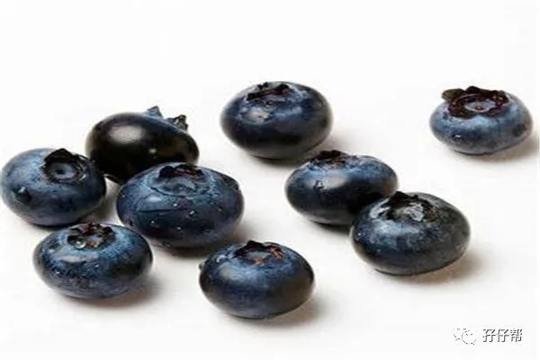
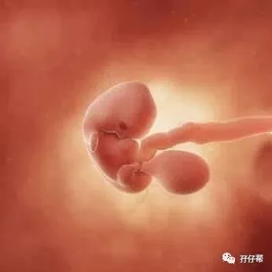
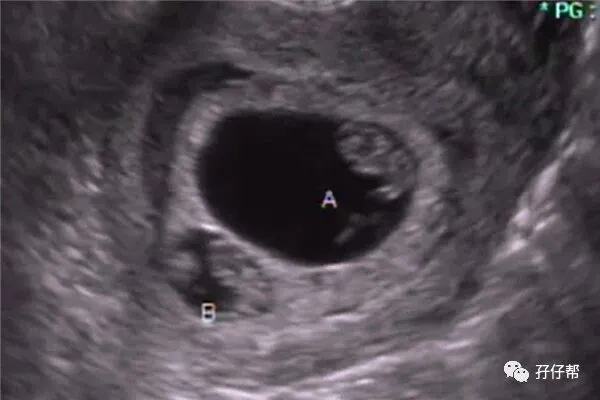
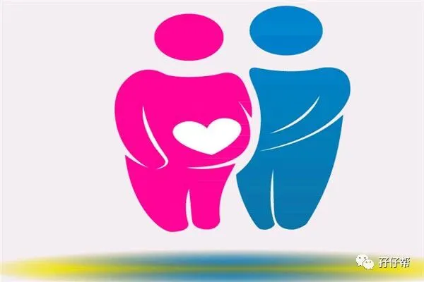

⬆⬆关注孖仔帮，与您分享双胞胎育儿经⬆⬆
文|圆圈妈 一个文思如尿崩的双胎妈妈
图|来自网络
双胎妊娠的第7周
两胎儿的发育情况
孕7周的双胞胎宝宝，大约有蓝莓那么大了，从头到臀部长1.3CM，体重约2.9G,如图所示⬇⬇
孕7周的双胞胎胎儿发育图⬇⬇：
B超孕7周的双胞胎胎儿影像图⬇⬇：
圆圈妈的孕期回忆录
ℹ进入孕7周，我吃不下了
我的食欲逐渐变差，总感觉胃部有阵火在烧，明明很饿，看见食物就直摇头，好不容易吃下去，还没消化，一阵作呕，就吐出来了。
因为对有味道的食物不感兴趣，我就只想喝白粥，结果吐得更凶，然后索性不吃，让胃安静下，但是仍然不能阻止我有呕吐的冲动。
上班路上，随身带点小零食，胃口好的时候，多吃一点，没胃口就少吃一点。嘴巴有事情做，胃里没那么空，我感觉呕吐次数确实减少了些。
✅✅TIPS✅✅：呕吐是早孕期最常见的妊娠反应之一，这个时候你可能为了减少呕吐就干脆不吃了，或者只想吃点清汤或稀饭。
但缓解孕吐，吃稀饭是不管用的，吃太多稀的食物反而会加重呕吐，此时可以改变进食顺序，先吃点干性食物，如干面包，老面馒头，苏打饼干…接着再喝汤或牛奶等液体食物。
ℹ早孕反应逐渐加重
口水特别多：我的口水啊，排山倒海般一波又一波地袭来，隔三五分钟就吐一次，我不得不随时准备个垃圾桶放在办公桌旁。
打扫办公室的阿姨好像猜出了什么，很贴心地建议我，吃点话梅糖。
睡不爽：因为吃不好，严重影响了睡眠质量，饥饿感总是不按常理出牌，随时随地冒出来，搅得无法入睡，我经常半夜饿醒来啃面包，然后吐，继续吃，接着吐…如此循环…
精神不好：晚上睡眠质量下降直接导致我白天的精神状态很差，我好像一天到晚都想睡，趴在办公桌上打个盹都无济于事了，有时候敲着键盘也能睡着了，好几次困到不行，躲在会议室睡着了。
✅✅TIPS✅✅：浑身乏力、嗜睡，是孕激素水平明显上升带来的作用。另外，随着子宫的逐渐增大，全身的血管阻力下降，血流增加。这些变化的主要作用是为子宫增加血流，这种血流的重新分布会让上半身的血供减少，整体的血压下降，这也会让你提不起精神没力气。来源：段涛大夫《怀孕生孩子那些事 之 提不起精神没力气》
尿频加重：尿频让我对上厕所这样一件小事变得格外反感，每天不断地在小方格里重复脱裤子，穿裤子…光是耗在上厕所的路上已经够消耗我的卡路里了，工作效率大打折扣，我真想找老板批准搬到厕所去办公。
乳房继续变大：不经意间发现“咪咪”经过一周后又长大了不少，但乳房胀痛感和瘙痒感持续进行中，我又不得不跑厕所去挠痒痒。
尚未发现怀孕之前，我就感觉乳房不对劲，乳头很敏感，一碰就痛，一碰就勃起，查出怀孕之后就发现“咪咪”迅速变大了，偶尔发胀发紧，需要稍微按摩下才觉得舒服点。
突然觉得大波妹不易做啊，变大的乳房甚至有些沉重，每天这样挺着，还真的挺累的哈，果然万人迷还是要付出代价的。
✅✅TIPS✅✅: 乳房变大其实也是早孕反应的一种。这是因为你体内的雌激素和孕激素水平迅速升高，刺激乳腺组织的发育。
除了乳房长大了，你还会有肿胀发麻的感觉，就好像每次大姨妈来临之前，乳房会莫名胀痛一样。不管怎样，还是开心下吧，就当做是一次性的丰胸手术，过把“大波妹”的瘾吧。
ℹ身体各种疼痛开始频现
腰部不适：我的腰酸胀得难受，坐也不是，站也不是，好像腰部位置被人用很粗的木棍棒打一顿似的...唯有躺下来才觉得舒服。
下腹部疼痛：我感觉软软的下腹部，开始变得硬邦邦的，结实有弹性,但偶尔会有隐痛感，过一会儿就消失了，不知道是不是太紧张产生幻觉了。
✅✅TIPS✅✅：你的子宫随着宝宝成长而扩张，造成很像月经痉挛的肌肉收缩或温和的阵痛收缩。同时，黄体激素让你的消化道变慢，让你觉得胀胀的、不舒服。
许多妇女都会经历这些无害的腹部疼痛，但如果你有伴随着出血的痉挛，或痉挛很严重，那有可能是流产的征兆，请立即就医。
ℹ开始准备产检资料
这一周正好遇上2015年的元旦，我回户籍所在地办《流动人口婚育证明》，开始为后面的产检走生育险流程做准备。
回到娘家，可能是尝到儿时熟悉的口味，胃口瞬间大好，一口气喝了两碗斑鱼汤，而且神奇地没有吐出来。
有时候没有妊娠反应时，肚子也没有显怀，我总是怀疑自己是不是没怀孕，O(∩_∩)O哈哈~我是找虐的节奏吧！
┈☞未完待续☜┉
上期推文:
连载（一）|圆圈妈双胞胎怀孕过程第4周
连载（二）|圆圈妈双胞胎怀孕过程第5周
连载（三）|圆圈妈双胞胎怀孕过程第6周
下期预告：
连载（五）|圆圈妈双胞胎怀孕过程第8周
本文系圆圈妈sgguy-com原创，来源于孖仔帮，专注双胞胎孕期育儿经验分享，著作权归孖仔帮所有。
---☜✪ The end ✪☞---
关于这个号
谢谢关注！我是圆圈妈
85后，全职双胎妈妈
家有孖仔两枚，圆圈&圈圈
双胞胎育儿公众号：孖仔帮
旨意分享双胞胎育儿经验帮助双胞胎家庭
有经验可循
有组织可靠
希望我的经验对您有所启发
期待与您一起共享双胞胎育儿经
孖仔帮目前有4个微信社群
孕期群，喂养群，闲置群，双胞胎爸爸专属群，
如需入交流群，请+圆圈妈的微信号sgguy-com,或扫描下方二维码
由圆圈妈邀请入群
添加请注明：
宝妈/宝爸，孕期/已生
长按二维码，加圆圈妈好友
往期精彩文章回顾：
105：同卵双胞胎的天敌--双胞胎输血综合征
106：官宣：双绒双羊，单绒双羊，单绒单羊傻傻分不清？一篇消除你所有疑问
215：双胎子宫日记系列|（下）你看不看？双胞胎妈妈直播剖腹产全过程
219：双胞胎准爸爸的生存指南：不做猪一样的队友，活着出来喜当爹
306：真人示范！双胞胎妈妈高难度喂母乳技巧
312：为出生就进NICU的双胞胎新生儿，我必须告诉你这5个通关秘籍
407：嘿！双胞胎孩子的亲子阅读攻略，要来一份吗（1--2岁阶段）
605：看过这份最简单的双胞胎宝宝用品囤货清单，其他的都是将就
608：听说...你在找双胞胎育儿神器，这事儿我熟！
723：双胎妈妈，为什么我不建议你这样坐月子...
我猜你肯定喜欢看上面的文章，对不对嘛？关注孖仔帮，回复文章前面的数字编号即可阅读。
长按识别二维码关注我们
更多孖仔帮双胞胎原创育儿文章，
请猛戳 "阅读原文"
或者直接上圆圈妈的个人博客。
博客链接↓↓
https://www.sgguy.com/twinsbang
#重磅互动#
评论区聊一聊
你希望圆圈妈写什么育儿经验干货？
随便提，万一下篇就写了呢？




